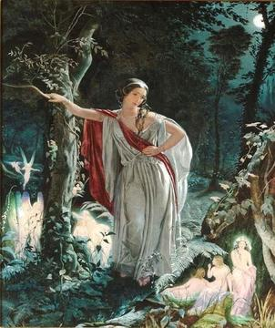
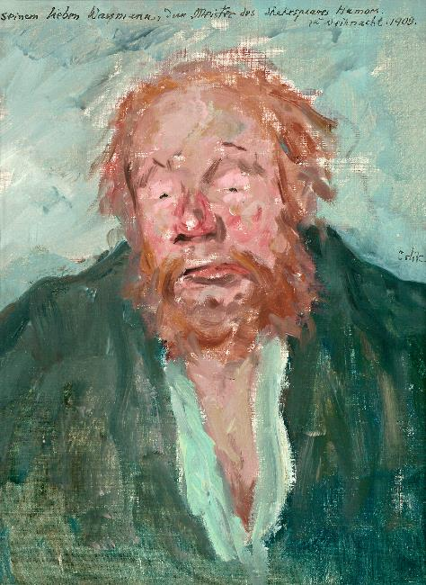

| Character |
Description |
Image |
| Theseus |
Duke of Athens |
 Thesus-SW by Plutho
Thesus-SW by Plutho
|
| Hippolyta |
Queen of the Amazons, betrothed to Theseus |

|
| Philostrate |
Master of the Revels |

|
| Hermia |
daughter of Egeus, in love with Lysander |

Hermia and Fairies by John Simmons
|
| Helena |
in love with Demetrius |

|
| Lysander |
in love with Hermia at first but later loves Helena and then goes back to love Hermia |

|
| Demetrius |
in love with Hermia at later love Helena |

|
| Peter Quince |
carpenter, leads the troupe and plays Prologue |

|
| Nick Bottom |
weaver, plays Pyramus |

Hans Wassmann as Bottom by Emil Orlik
|
| Francis Flute |
bellows-mender, plays Thisbe |

|
| Robin Starveling |
tailor, plays Moonshine |

|
| Tom Snout |
tinker, plays Wall |

|
| Snug |
joiner, plays Lion |

|
| Oberon |
Titania's husband and King of the Fairies |
 The Quarrel of Oberon and Titania by Joseph Noel Paton
The Quarrel of Oberon and Titania by Joseph Noel Paton
|
| Titania |
Oberon's wife and Queen of the Fairies |
| Puck |
servant to Oberon |
 Reynolds-Puck by Sir Joshua Reynold
Reynolds-Puck by Sir Joshua Reynold
|
{kind=link}
{kind=link}
{kind=link}
{kind=link}